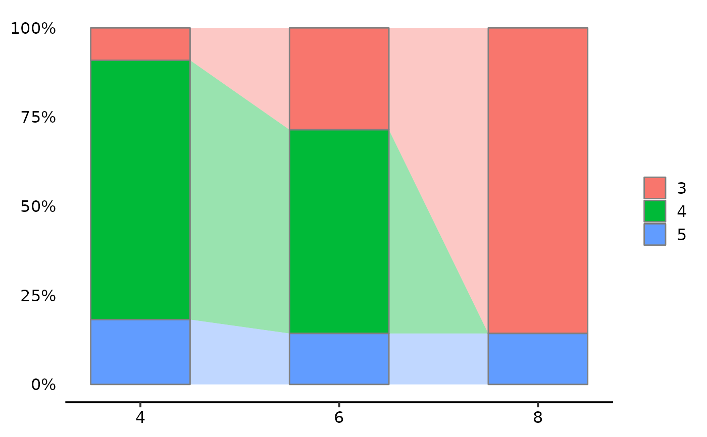

Plot Alluvial Plot
AlluviaPlot(
cellmeta,
by,
fill,
colors = NULL,
bar.width = 0.5,
legend.ncol = 1
)a data frame containing the cell metadata.
a character string specifying the column name in cellmeta which will be used to group the cells.
a character string specifying the column name in cellmeta which will be used to fill the plot.
(optional) vector of colours to use for filling the plot. If not specified, the default colour scheme will be used.
a numeric value between 0 and 1 specifying the width of the bars in the plot.
an integer specifying the number of columns in the legend.
A ggplot object representing an alluvial plot.
https://stackoverflow.com/questions/73372641/shaded-area-between-bars-using-ggplot2
AlluviaPlot(mtcars, "cyl", "gear")
